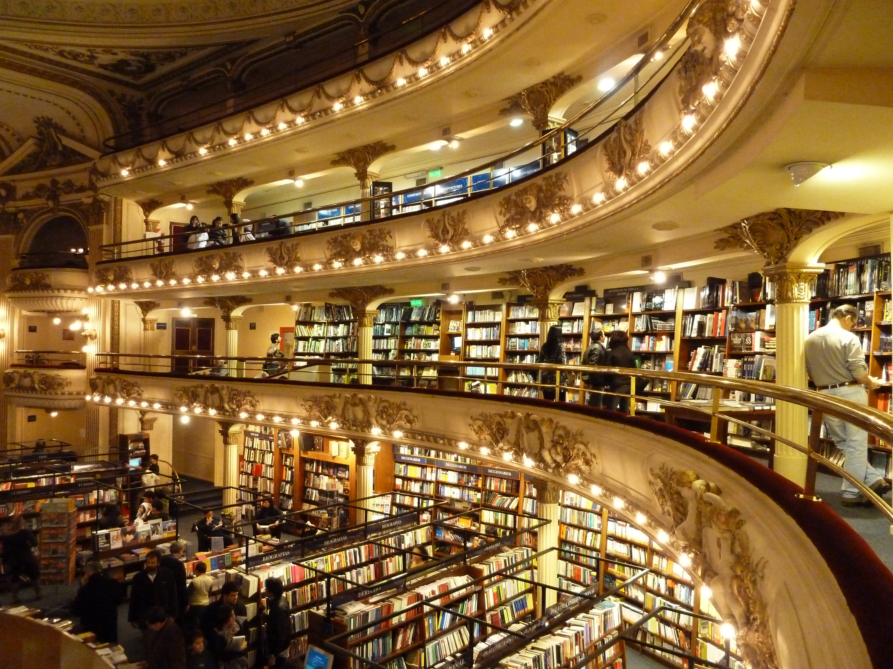
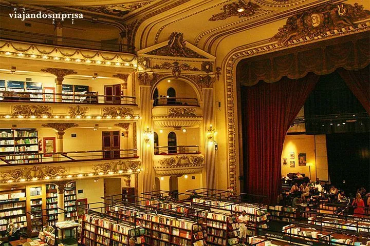
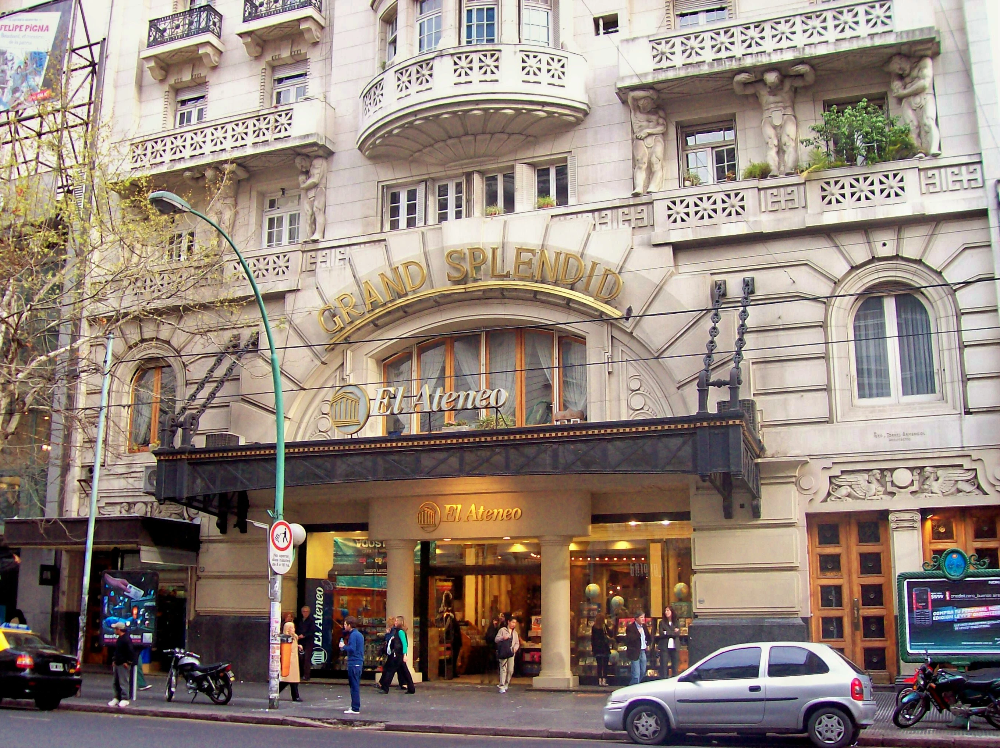

History and Architecture
From theater to bookstore, Ateneo Grand Splendid has become one of Buenos Aires’ most admired landmarks.
Origins
The building originally opened in 1919 as a theater and later served different cultural purposes
before becoming the famous bookstore known today. Its transformation allowed the space
to remain active while preserving its artistic and historical identity.

Interior Beauty
The bookstore still displays the rich character of a theater, including ornate balconies,
decorative moldings, elegant lighting, and a dramatic central space.

The Stage Café
One of the most unique elements is the café located where the stage once stood.
This detail allows visitors to sit and enjoy the space from a memorable point of view.

Cultural Importance
Ateneo Grand Splendid is more than a bookstore. It is a cultural destination that attracts
readers, tourists, and architecture lovers from around the world.